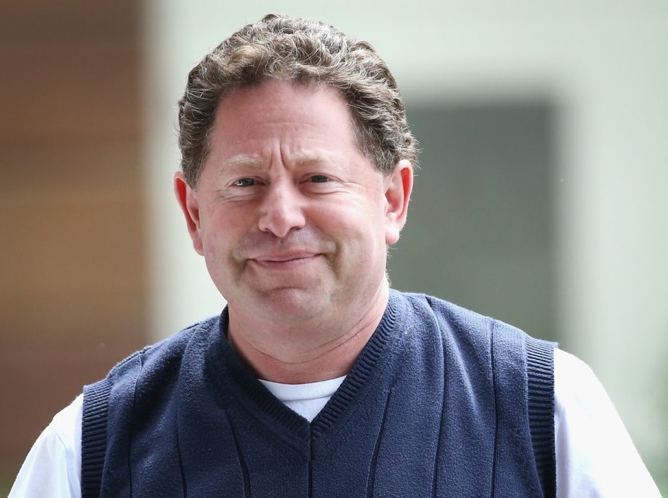

Роберт А. «Бобби» Котик (англ. Robert A. «Bobby» Kotick, р. 1963) — CEO, президент и член правления компании Activision Blizzard.
Бобби Котик родился в 1963 году. Знатный гешефтмахер от игровой индустрии, скандально известный генеральный управляющий главного рассадника рака, убивающего /vg/ — Асtivision. Прославился благодаря эпичному троллингу в адрес EA и своими резкими высказываниями в адрес разработчиков. ЕРЖ. Стоит отметить, что ни в какие игры, кроме Guitar Hero, сабж в жизни никогда не играл, но всё таки поигрывает с детьми в кое-что ещё, о чём, неоднократно говорил. Действия Котика направлены исключительно в русло получения прибыли и дойки франчайзов, таких как Call of Duty, Guitar Hero и прочих брендов. По данным журнала Forbes, в 2008 году Бобби Котик заработал около пятнадцати миллионов долларов, $899,560 из них составила его зарплата. А в 2018 — все 28,6 лямов! (В 306 раз больше, чем медианный сотрудник Activision.)